library(ggdag)
library(ggplot2)
theme_set(theme_dag())
dag = confounder_triangle(x = "Coffee", y = "Lung Cancer", z = "Smoking")
ggdag(dag, text = FALSE, use_labels = "label")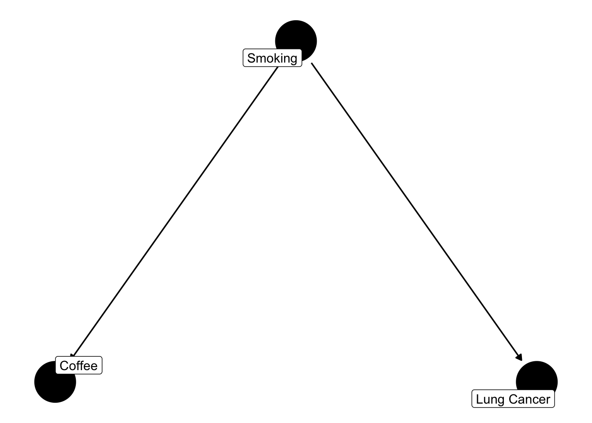
In this chapter, you will learn
Workflow steps (Section 1.1.2): step 1 (question and goal), step 3 (choice of predictors).
Prerequisites: the linear model (Chapter 2), in particular multiple regression (Section 2.7).
The most fundamental distinction in strategies for model choice is if we want to estimate effects, or if we want to predict. If we want to estimate effects, we nearly always want to estimate causal effects. Prediction is treated in the chapter on model selection (Chapter 8).
Let me first define what we mean by “a causal effect”: if we have a system with a number of variables, the causal effect of A on B is the change in B that would happen if we intervened on A (set it to a different value), while everything not caused by A is left unchanged. This total effect includes paths through mediators; the direct effect excludes them.
Assume we look at the effect of coffee consumption on Lung Cancer. Assume further that there is no such effect. However, there is an effect of smoking on lung cancer, and for some reason, smoking also affects coffee consumption.
It is common to visualize and analyze such relationships in a causal graph. Here, I use the ggdag package
library(ggdag)
library(ggplot2)
theme_set(theme_dag())
dag = confounder_triangle(x = "Coffee", y = "Lung Cancer", z = "Smoking")
ggdag(dag, text = FALSE, use_labels = "label")
We can use the ggdag package (or to be more exact: the underlying daggitty package) to explore the implications of this graph. The way I created the graph already includes the assumption that we are interested in the effect of Coffee on Lung Cancer. I can use the function ggdag_dconnected() to explore if those two are d-connected — a technical term for whether two variables may be statistically associated given a particular conditioning set (i.e. which other variables are controlled for).
ggdag_dconnected(dag, text = FALSE, use_labels = "label")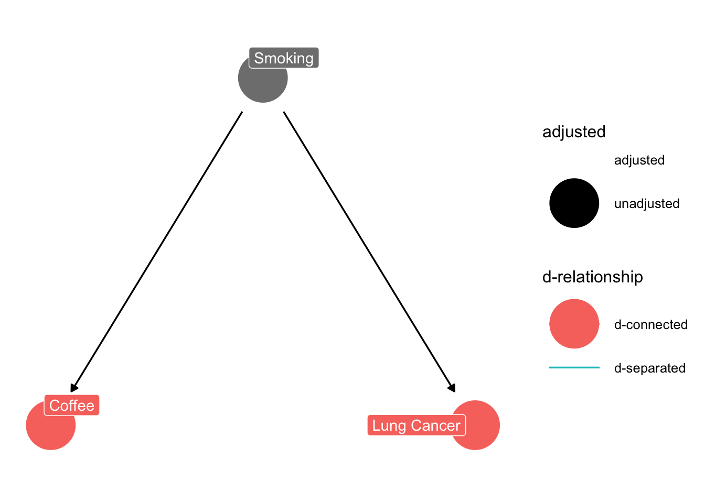
In this case, the plot highlights me to the fact that Coffee and Lung cancer are d-connected (with an empty conditioning set, i.e. without controlling for anything). What that means is: if I plot coffee against lung cancer, I will see a correlation between them, even though coffee consumption does not influence lung cancer at all. Note that d-connection is a property of the graph: it tells us which associations we should expect in the data, not that there is a causal link between the two variables — here, the association is entirely created by the common cause Smoking. We can easily confirm via a simulation that this is true:
smoking <- runif(50)
Coffee <- smoking + rnorm(50, sd = 0.2)
LungCancer <- smoking + rnorm(50, sd =0.2)
fit <- lm(LungCancer ~ Coffee)
plot(LungCancer ~ Coffee)
abline(fit)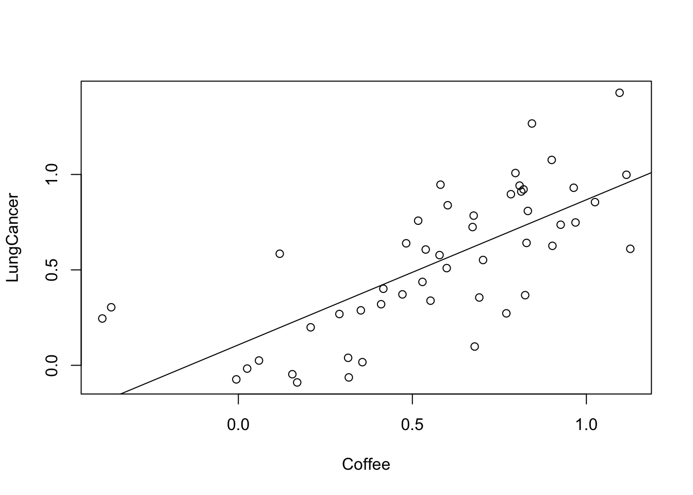
So, if we would fit a regression of LungCancer ~ Coffee, we would at least conclude that there is a correlation between the two variables. Many people would even go a step further, and conclude that Coffee consumption affects lung cancer. This is a classical misinterpretation created by the confounder smoking. Realizing this, I could ask the ggdag_dconnected function what would happen if I control for the effect of smoking.
ggdag_dconnected(dag, text = FALSE, use_labels = "label", controlling_for = "z")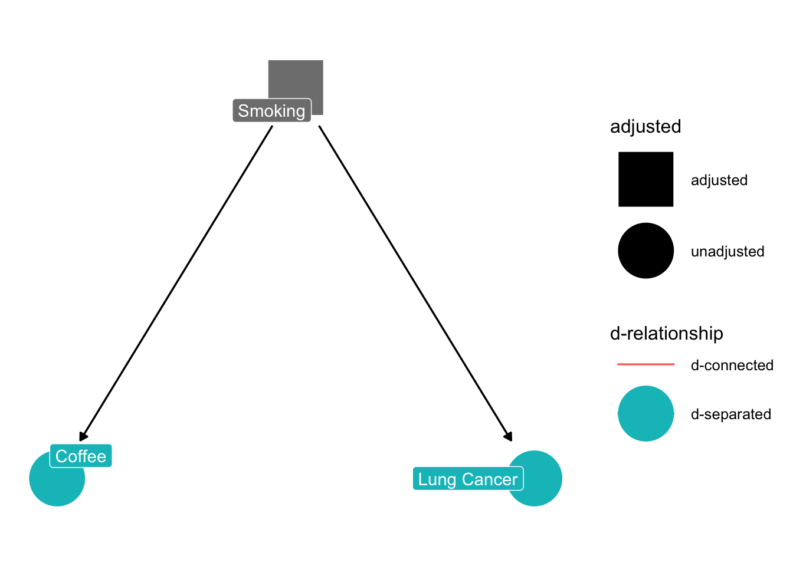
The result conforms with our intuition - once we control for smoking, there will be no correlation between Coffee and Lung Cancer (because there is no causal effect between them). In causal lingo, we say the two are now d-separated.
But how do we control for the confounder smoking?
The conceptually easiest approach is: we perform a controlled experiment. The entire idea experiments is that we vary only one (or a few) factors, keeping the others constant, and thus we are able to “see” causal effects directly. So, if we did an experiment with people that all smoke the same, varying coffee, we would get the right result:
smoking <- rep(0.5, 50)
Coffee <- smoking + rnorm(50, sd = 0.2)
LungCancer <- smoking + rnorm(50, sd =0.2)
fit <- lm(LungCancer ~ Coffee)
plot(LungCancer ~ Coffee)
abline(fit)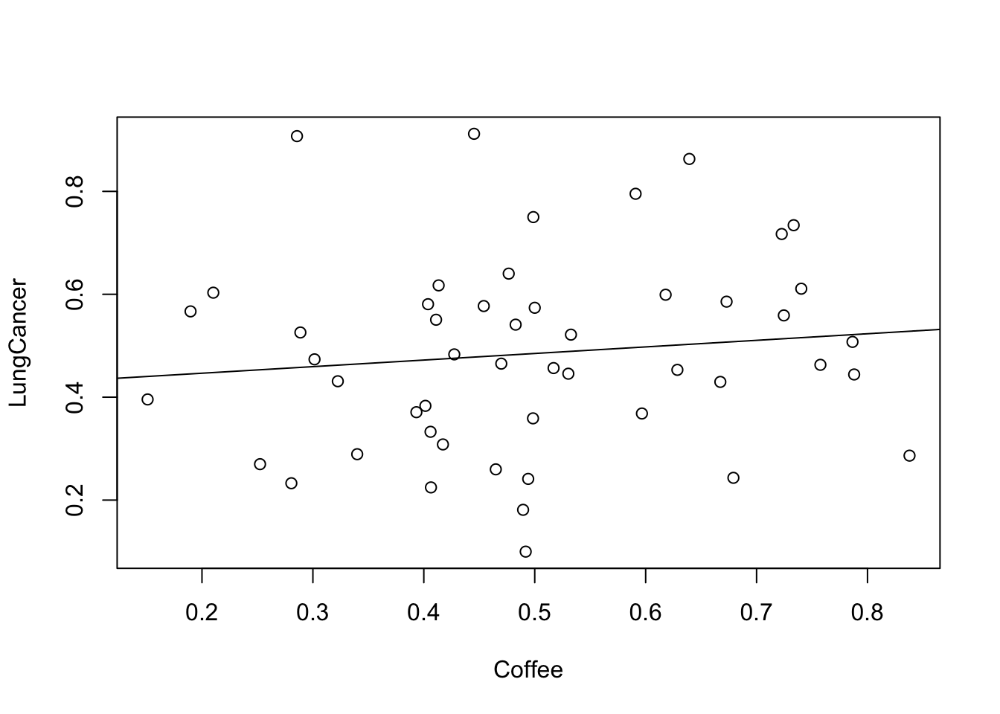
This leads us to an important point: randomized controlled experiments estimate causal effects, provided the randomization (and compliance, blinding) worked. Actually, all advice regarding experimental design (control, randomization) is aimed at removing any possible confounding with other factors, so that we can isolate causal effects.
In observational data, we have to use statistical methods to achieve statistical control. Luckily, we have a great tool for that: the multiple regression (see Section 2.7).
The multiple regression can estimate the effect of coffee, corrected for the effect of smoking. Thus, by including smoking in the multiple regression, we are “virtually” holding smoking constant, thus allowing us to estimate the causal effect of coffee. Let’s try this out:
smoking <- runif(100)
Coffee <- smoking + rnorm(100, sd = 0.2)
LungCancer <- smoking + rnorm(100, sd =0.2)
fit1 <- lm(LungCancer ~ Coffee)
fit2 <- lm(LungCancer ~ Coffee + smoking)
plot(LungCancer ~ Coffee)
abline(fit1)
xs <- seq(min(Coffee), max(Coffee), length.out = 50)
lines(xs, predict(fit2, data.frame(Coffee = xs, smoking = mean(smoking))), col = "red")
legend("topleft", c("simple regression", "multiple regression"), col = c(1,2), lwd = 1)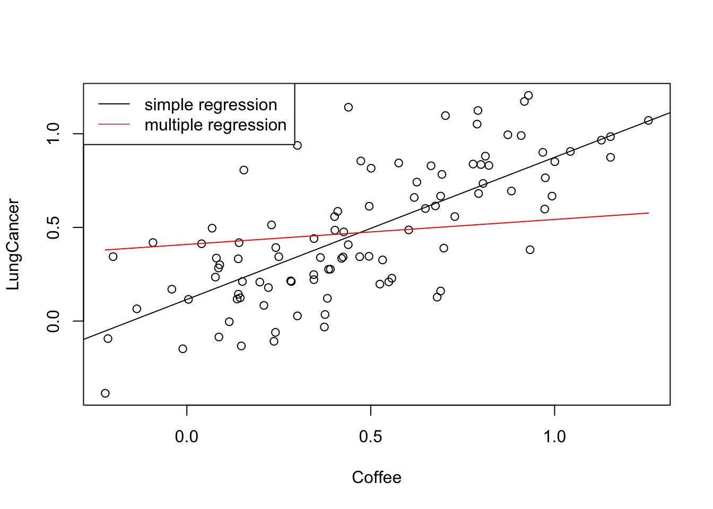
The red line shows the effect of coffee with smoking held at its mean: it is much flatter than the simple regression, i.e. most of the apparent coffee effect disappears once we control for smoking.
GAMs (see Section 2.5.3) are particularly useful for confounders. If you have confounders, you usually don’t care that the fitted relationship is a bit hard to interpret, you just want the confounder effect to be removed. So, if you want to fit the causal relationship between Ozone ~ Wind, account for the other variables, a good strategy might be:
library(mgcv)
fit = gam(Ozone ~ Wind + s(Temp) + s(Solar.R) , data = airquality)
summary(fit)
Family: gaussian
Link function: identity
Formula:
Ozone ~ Wind + s(Temp) + s(Solar.R)
Parametric coefficients:
Estimate Std. Error t value Pr(>|t|)
(Intercept) 72.2181 6.3166 11.433 < 2e-16 ***
Wind -3.0302 0.6082 -4.982 2.55e-06 ***
---
Signif. codes: 0 '***' 0.001 '**' 0.01 '*' 0.05 '.' 0.1 ' ' 1
Approximate significance of smooth terms:
edf Ref.df F p-value
s(Temp) 3.358 4.184 14.972 <2e-16 ***
s(Solar.R) 2.843 3.551 3.721 0.0115 *
---
Signif. codes: 0 '***' 0.001 '**' 0.01 '*' 0.05 '.' 0.1 ' ' 1
R-sq.(adj) = 0.664 Deviance explained = 68.6%
GCV = 402.11 Scale est. = 372.4 n = 111In this way, you still get a nicely interpretable linear effect for Wind, but you don’t have to worry about the functional form of the other predictors.
What we have just seen in the section on statistical control (Section 7.2.2) is an example of a causal analysis. The goal of a causal analysis is to control for other variables, in such a way that we estimate the same effect size we would obtain if only the target predictor was manipulated (as in a randomized controlled trial). If we are after causal effects, the correct selection of variables is crucial, while it isn’t if we just want to predict (see the chapter on model selection, Chapter 8).
You probably have learned in your intro stats class that, to do so, we have to control for confounders. I am less sure, however, if everyone is clear about what a confounder is. In particular, confounding is more specific than having a variable that correlates with predictor and response. The direction is crucial to identify true confounders. Imagine that there is a third variable (nervousness) that is influenced by both coffee and lung cancer:
dag = collider_triangle(x = "Coffee", y = "Lung Cancer", m = "Nervousness")
ggdag(dag, text = FALSE, use_labels = "label")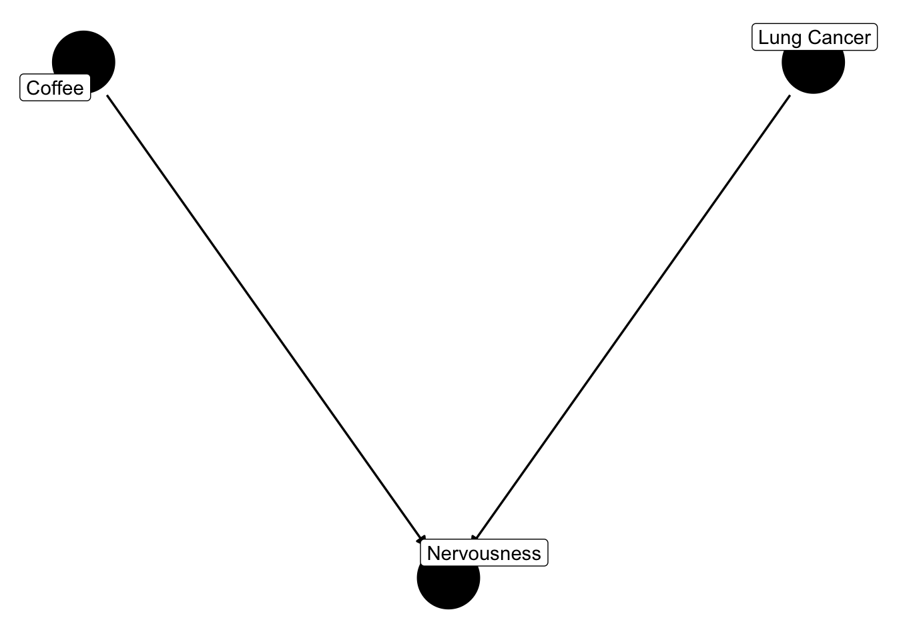
Let’s simulate some data according to this structure
set.seed(123)
Coffee <- runif(100)
LungCancer <- runif(100)
nervousness = Coffee + LungCancer + rnorm(100, sd = 0.1)If we fit a multiple regression on this structure, we erroneously conclude that there is an effect of coffee on lung cancer (note the strongly negative coefficient: conditioning on a collider induces a spurious negative association)
fit1 <- lm(LungCancer ~ Coffee + nervousness)
summary(fit1)
Call:
lm(formula = LungCancer ~ Coffee + nervousness)
Residuals:
Min 1Q Median 3Q Max
-0.316061 -0.053494 0.002907 0.071460 0.164066
Coefficients:
Estimate Std. Error t value Pr(>|t|)
(Intercept) 0.07886 0.02575 3.063 0.00284 **
Coffee -0.90108 0.04466 -20.179 < 2e-16 ***
nervousness 0.88282 0.03307 26.696 < 2e-16 ***
---
Signif. codes: 0 '***' 0.001 '**' 0.01 '*' 0.05 '.' 0.1 ' ' 1
Residual standard error: 0.09188 on 97 degrees of freedom
Multiple R-squared: 0.8811, Adjusted R-squared: 0.8787
F-statistic: 359.5 on 2 and 97 DF, p-value: < 2.2e-16this time, the univariate regression gets it right:
fit1 <- lm(LungCancer ~ Coffee)
summary(fit1)
Call:
lm(formula = LungCancer ~ Coffee)
Residuals:
Min 1Q Median 3Q Max
-0.51061 -0.21159 -0.00986 0.17769 0.48695
Coefficients:
Estimate Std. Error t value Pr(>|t|)
(Intercept) 0.55449 0.05342 10.380 <2e-16 ***
Coffee -0.08077 0.09314 -0.867 0.388
---
Signif. codes: 0 '***' 0.001 '**' 0.01 '*' 0.05 '.' 0.1 ' ' 1
Residual standard error: 0.2641 on 98 degrees of freedom
Multiple R-squared: 0.007616, Adjusted R-squared: -0.00251
F-statistic: 0.7521 on 1 and 98 DF, p-value: 0.3879What we’ve seen here is a collider bias - a collider is a variable that is influenced by predictor and response. Although it correlates with predictor and response, correcting for it (or including it) in a multiple regression will create a bias on the causal link we are interested in (Corollary: Including all variables is not always a good thing).
There is an entire framework to analyze which variables you need to include in the regression to achieve proper control (Pearl, 2009). In the following picture, I have summarized the three basic structures. The one that we haven’t discussed yet is a mediation structure. A mediator is an intermediate variable that “mediates” an effect between exposure and response.
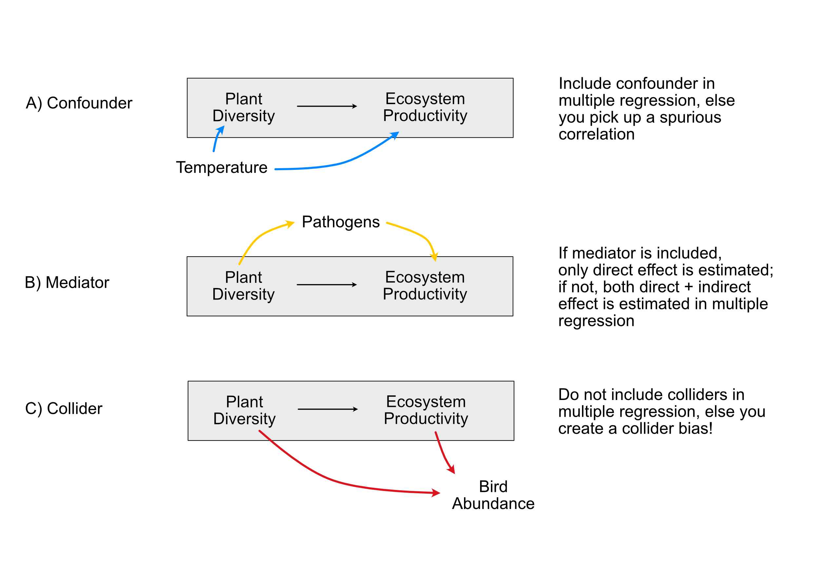
How do we deal with the basic causal structures colliders, mediators and confounders in a regression analysis? Start by writing down the hypothesis / structure that you want to estimate causally (for example, “Plant diversity” -> Ecosystem productivity in the figure above). Then
Note: If other variables are just there to correct our estimates, they are nuisance parameters (= we are not interested in them), and we should later not discuss them, as they were not themselves checked for confounding (Table 2 fallacy, see Section 7.4.1).
A nice walk-through of finding adjustment sets with ggdag is the blog post Closing backdoors with DAGs by Andrew Heiss.
Let’s take a more complicated example. We will use data from Grace and Keeley (2006), who try to understand plant diversity following wildfires in fire-prone shrublands of California. The authors have measured various variables, and they have a specific hypothesis how those are related (see below).
library(piecewiseSEM)
theme_set(theme_dag())
dag <- dagify(rich ~ distance + elev + abiotic + age + hetero + firesev + cover,
firesev ~ elev + age + cover,
cover ~ age + elev + abiotic ,
exposure = "cover",
outcome = "rich"
)
ggdag(dag)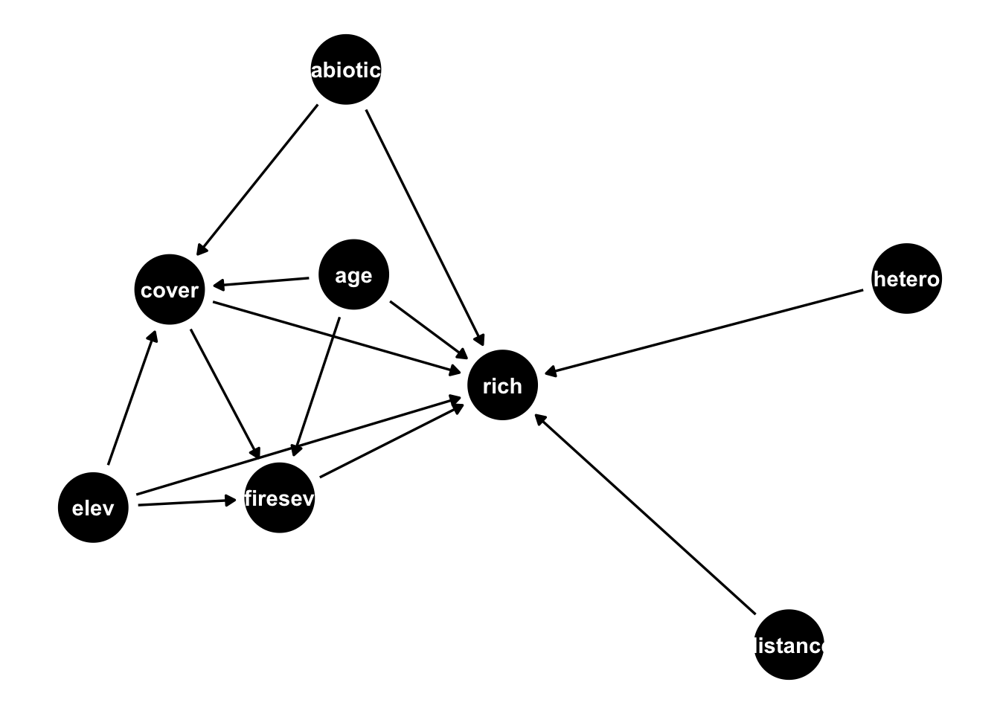
For this exercise, I want to assume that we are particularly interested in the causal effect of cover on species richness. I have specified this in the dag above already. With the ggdag_paths() command, I can isolate all paths that would create a correlation between cover and richness
ggdag_paths(dag)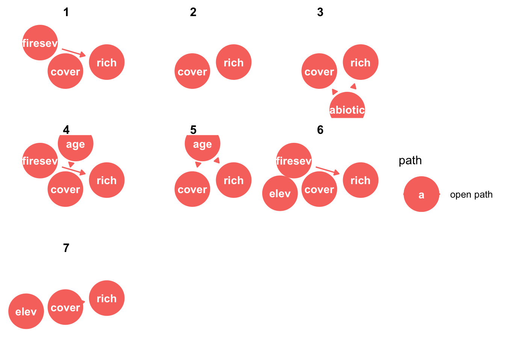
Looking at the paths, I can see confounding structures, for example for age, abiotic and elevation. So I should definitely control for them. The function
ggdag_adjustment_set(dag)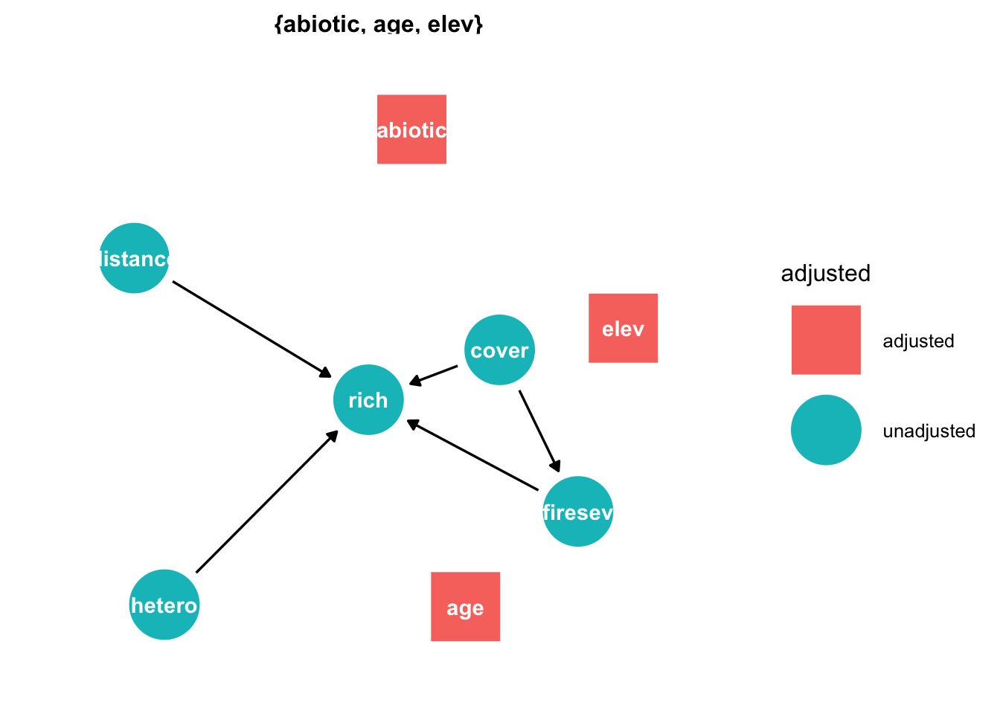
helps me by suggesting which confounders I should control for. Note that the function doesn’t suggest to adjust for mediation structures per default, but keeps them in the graph, so you have to decide what to do with them. You can directly ask to include adjustment for mediation if you run
ggdag_adjustment_set(dag, effect="direct")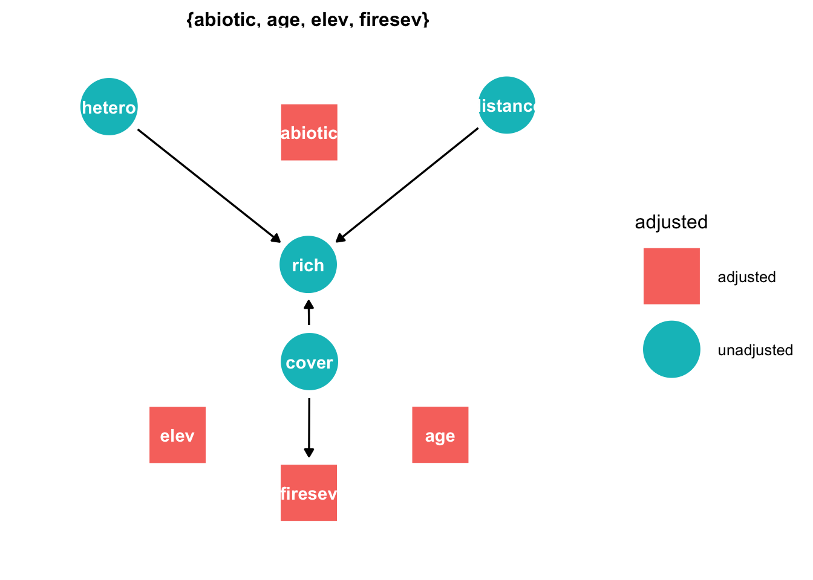
in this case, plot suggest to adjust for fire severity, to isolate the direct effect of cover on richness.
So, the model we should fit is
fit = lm(rich ~ cover + abiotic + elev + firesev + age, data = keeley)
summary(fit)
Call:
lm(formula = rich ~ cover + abiotic + elev + firesev + age, data = keeley)
Residuals:
Min 1Q Median 3Q Max
-29.146 -8.030 0.033 7.909 37.819
Coefficients:
Estimate Std. Error t value Pr(>|t|)
(Intercept) 13.033165 11.432393 1.140 0.258
cover 6.692065 4.754448 1.408 0.163
abiotic 0.790552 0.182962 4.321 4.24e-05 ***
elev 0.007117 0.005565 1.279 0.204
firesev -1.285966 0.946084 -1.359 0.178
age -0.176153 0.121290 -1.452 0.150
---
Signif. codes: 0 '***' 0.001 '**' 0.01 '*' 0.05 '.' 0.1 ' ' 1
Residual standard error: 12.23 on 84 degrees of freedom
Multiple R-squared: 0.3815, Adjusted R-squared: 0.3446
F-statistic: 10.36 on 5 and 84 DF, p-value: 9.213e-08When reporting this, note that we have only corrected the relationship rich ~ cover for confounding. Consequently, we should not report the entire regression table above, or at least make a clear distinction about which variables have been corrected, and which haven’t.
The blind reporting of the entire regression table is known as Table 2 fallacy (because regression tables are often Table 2 in a paper).
But what if we are interested in all the causal relationships? If we have a graph already and are interested in all relationships in it (not just one effect, for which the adjustment-set regression above suffices), a good option is to fit a structural equation model.
Structural equation models (SEMs) are models that are designed to estimate entire causal diagrams. For GLM responses (see Chapter 9), you will currently have to estimate the DAG (directed acyclic graph) piece-wise, e.g. with piecewiseSEM.
For linear (= normally distributed) SEMs, we can estimate the entire DAG in one go. This also allows us to have unobserved variables in the DAG. One of the most popular packages for this is lavaan. The advantage of lavaan is that you can also have unobserved covariates which can be modeled latent.
If you have REs (Chapter 4) or GLM-type dependencies (Chapter 9), the only way to fit everything in one go is to go to use Bayesian Inference, e.g. STAN (for examples, see the chapter on Bayesian causal models in Hartig (2024)). However, what you can do is to fit your models piece-wise. The most popular package for this purpose is piecewiseSEM (see the package documentation for the supported model classes).
library(piecewiseSEM)
mod = psem(
lm(rich ~ distance + elev + abiotic + age + hetero + firesev + cover, data = keeley),
lm(firesev ~ elev + age + cover, data = keeley),
lm(cover ~ age + elev + hetero + abiotic, data = keeley)
)
summary(mod)
|
| | 0%
|
|================== | 25%
|
|=================================== | 50%
|
|==================================================== | 75%
|
|======================================================================| 100%
Structural Equation Model of mod
Call:
rich ~ distance + elev + abiotic + age + hetero + firesev + cover
firesev ~ elev + age + cover
cover ~ age + elev + hetero + abiotic
AIC
1041.203
---
Tests of directed separation:
Independ.Claim Test.Type DF Crit.Value P.Value
firesev ~ distance + ... coef 85 -0.8264 0.4109
cover ~ distance + ... coef 84 0.4201 0.6755
firesev ~ abiotic + ... coef 85 -1.1799 0.2413
firesev ~ hetero + ... coef 85 -0.5755 0.5665
--
Global goodness-of-fit:
Chi-Squared = 1.968 with P-value = 0.742 and on 4 degrees of freedom
Fisher's C = 6.543 with P-value = 0.587 and on 8 degrees of freedom
---
Coefficients:
Response Predictor Estimate Std.Error DF Crit.Value P.Value Std.Estimate
rich distance 0.6157 0.1855 82 3.3195 0.0013 0.3599 **
rich elev -0.0092 0.0059 82 -1.5663 0.1211 -0.1569
rich abiotic 0.4881 0.1641 82 2.9741 0.0039 0.2482 **
rich age 0.0241 0.1097 82 0.2199 0.8265 0.0201
rich hetero 44.4135 10.8093 82 4.1088 0.0001 0.3376 ***
rich firesev -1.0181 0.8031 82 -1.2677 0.2085 -0.1114
rich cover 12.3998 4.2206 82 2.9379 0.0043 0.2604 **
firesev elev -0.0006 0.0006 86 -0.9298 0.3551 -0.0874
firesev age 0.0473 0.0129 86 3.6722 0.0004 0.3597 ***
firesev cover -1.5214 0.5204 86 -2.9236 0.0044 -0.2921 **
cover age -0.0101 0.0024 85 -4.1757 0.0001 -0.3991 ***
cover elev 0.0004 0.0001 85 2.9688 0.0039 0.2999 **
cover hetero -0.7875 0.2719 85 -2.8960 0.0048 -0.2850 **
cover abiotic 0.0021 0.0042 85 0.4855 0.6286 0.0498
Signif. codes: 0 '***' 0.001 '**' 0.01 '*' 0.05
---
Individual R-squared:
Response method R.squared
rich none 0.57
firesev none 0.30
cover none 0.26plot(mod)The output of summary(mod) has three parts: (1) the d-separation tests, each of which tests one arrow that is missing in the DAG (here 4 tests, none significant); (2) Fisher’s C statistic, which combines these tests: a p-value above 0.05 means that there is no evidence against the DAG, a small p-value would indicate a missing arrow or a wrong structure; (3) the path coefficients of all regressions (use the standardized coefficients to compare the strength of different paths).
There is another trick to remove confounders, which is often used in machine learning. Consider the following example, where we have a main effect x->y, and a confounder (see Section 7.3) conf.
conf = runif(500) # confounder
x = 0.5 * conf + 0.5 *runif(500) # main predictor
y = 1.2* x + conf + rnorm(500, sd = 0.2)A multiple regression identifies the correct effect for x.
summary(lm(y ~ x + conf))
Call:
lm(formula = y ~ x + conf)
Residuals:
Min 1Q Median 3Q Max
-0.5785 -0.1453 -0.0037 0.1263 0.6079
Coefficients:
Estimate Std. Error t value Pr(>|t|)
(Intercept) 0.04007 0.02480 1.616 0.107
x 1.07328 0.06709 15.998 <2e-16 ***
conf 1.01756 0.04692 21.688 <2e-16 ***
---
Signif. codes: 0 '***' 0.001 '**' 0.01 '*' 0.05 '.' 0.1 ' ' 1
Residual standard error: 0.2102 on 497 degrees of freedom
Multiple R-squared: 0.8316, Adjusted R-squared: 0.831
F-statistic: 1227 on 2 and 497 DF, p-value: < 2.2e-16Another way to get those effects is the following, where we fit all variables against the confounder. This essentially conditions on the confounder. If we then regress the residuals without the confounder, we get the original effect. The point estimate equals that of the multiple regression; the standard error of this second stage is not exactly valid, as it ignores that the residuals were estimated.
resX.C = resid(lm(x~conf))
resY.C = resid(lm(y~conf))
summary(lm(resY.C ~ resX.C))
Call:
lm(formula = resY.C ~ resX.C)
Residuals:
Min 1Q Median 3Q Max
-0.5785 -0.1453 -0.0037 0.1263 0.6079
Coefficients:
Estimate Std. Error t value Pr(>|t|)
(Intercept) 3.843e-18 9.390e-03 0.00 1
resX.C 1.073e+00 6.702e-02 16.02 <2e-16 ***
---
Signif. codes: 0 '***' 0.001 '**' 0.01 '*' 0.05 '.' 0.1 ' ' 1
Residual standard error: 0.21 on 498 degrees of freedom
Multiple R-squared: 0.3399, Adjusted R-squared: 0.3386
F-statistic: 256.5 on 1 and 498 DF, p-value: < 2.2e-16You can also do this with more variables.
Strictly speaking, what we did here is the classic Frisch-Waugh-Lovell partialling-out result, not yet full double/debiased machine learning as introduced by Chernozhukov et al. (2018). What turns this trick into “double ML” is two additional ingredients: (i) the two nuisance regressions (x ~ conf and y ~ conf) are fit with flexible, potentially high-dimensional ML estimators (e.g. random forests, gradient boosting) instead of a simple lm, and (ii) cross-fitting - the nuisance models are trained on one part of the data and the residuals (and thus the effect of interest) are computed on a held-out part. Cross-fitting is what removes the overfitting bias that flexible ML nuisance models would otherwise introduce into the residuals, and it is what gives double ML its statistical guarantees (valid confidence intervals even when the nuisance functions are estimated nonparametrically).
The following data set contains information about life satisfaction (lebensz_org) in Germany, based on the socio-economic panel.
library(EcoData)
# ?soep # see the help page for the variables